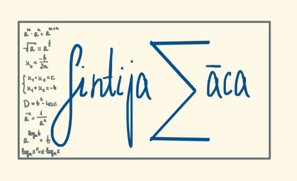

Laipni lūdzam matemātikas izcilībā
Atklājiet matemātikas skaistumu caur aizraujošām nodarbībām, visaptverošiem kursiem un interaktīviem mācību materiāliem.

Par jūsu matemātikas skolotāju
Esmu Sintija, matemātikas skolotāja ar vairāk nekā 10 gadu pieredzi privātstundu vadīšanā un 6 gadu darba pieredzi skolā. Absolvēju Latvijas Universitātes Matemātikas un fizikas fakultāti, iegūstot kvalifikāciju “Vidējās izglītības matemātikas skolotājs”.
Matemātikas kursi
Matemātiskā analīze - Pilnais kurss
Visaptverošs matemātiskās analīzes kurss, kas aptver robežas, atvasinājumus, integrāļus un to pielietojumus. Kurss ir sadalīts trīs daļās ar pakāpenisku sarežģītības palielināšanu.
Sākt mācītiesKursa saturs
1. daļa - Pamati un robežas
- Funkciju jēdziens un īpašības
- Robežas un to īpašības
- Nepārtrauktība
- Robežas bezgalībā
- Praktiskie piemēri un uzdevumi
2.1. daļa - Atvasinājumi
- Atvasinājuma definīcija un ģeometriskā nozīme
- Atvasināšanas noteikumi
- Augstāku kārtu atvasinājumi
- Funkciju ekstrēmi
- Optimizācijas uzdevumi
2.2. daļa - Integrāļi
- Nenoteiktais integrālis
- Noteiktais integrālis
- Integrēšanas metodes
- Integrāļu pielietojumi
- Diferenciālvienādojumi
Mācību materiāli
Matemātiskās analīzes kursa materiāli
Praktiskie uzdevumi un piemēri
Video nodarbības
Funkciju robežas - pamatjēdzieni
Robežu definīcija un īpašības matemātiskajā analīzē
Atvasinājumu aprēķināšanas metodes
Atvasināšanas noteikumi un to pielietojumi
Integrāļu aprēķināšanas tehnikas
Dažādas integrēšanas metodes un to pielietojumi
Optimizācijas uzdevumi
Atvasinājumu pielietojums optimizācijas problēmu risināšanā
Atskaņošanas saraksti
Matemātiskās analīzes pamati
1. daļa - Funkciju robežas un nepārtrauktība
Atvasinājumu teorija un prakse
2.1. daļa - Atvasinājumi un to pielietojumi
Integrāļu aprēķināšana
2.2. daļa - Integrāļi un diferenciālvienādojumi
Sazinies ar mani
Sazināsimies
Vai jums ir jautājumi par matemātiku vai nepieciešama palīdzība ar konkrētu problēmu? Es esmu šeit, lai palīdzētu!